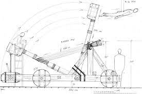

როგორ მუსაობს კატაპულტი? ამაზე პასუხს ახლავე გეტყვით, თუ ჩვენ გვინდა რომ კატაპულტმა უფრო სორს სიროლოს მაშინ ჩვენ არა დიდი არამედ პატარა ზამბარა ანუ რეზინი დაგვჭირდება იმიტომ, რომ მას მაღალი აქვს სიხისტე, ამიტომ რაც უფრო მეტი ძალით მოვქაჩავთ კატაპულტს მით უფრო ძლიერად და შორს გაისვრის, ამიტომც გვწირდება პატარა რეზინი რადგან, ცოტა ძალა მაინც დავატანოთ კატაპულტს. კიდევ კატაპულტში არის 2 სახის ენერგია ესენია: პოტენციური და კინეტიკური. ტავიდან კატაპულტს უძრავ მდგომარეობაში გააჩნია პოტენციური ენერგია, ხოლო შემდეგ როდესაც ისვრის ის პოტენციური ენერგია იკლებს და იმატებს კინეტიკური რომელიც იმ სხეულშია რომელსაც კატაპულტით ვისვრით. 